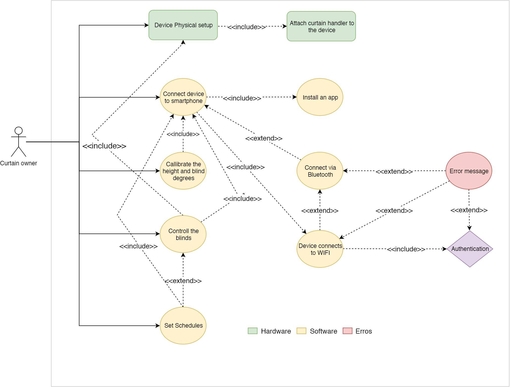
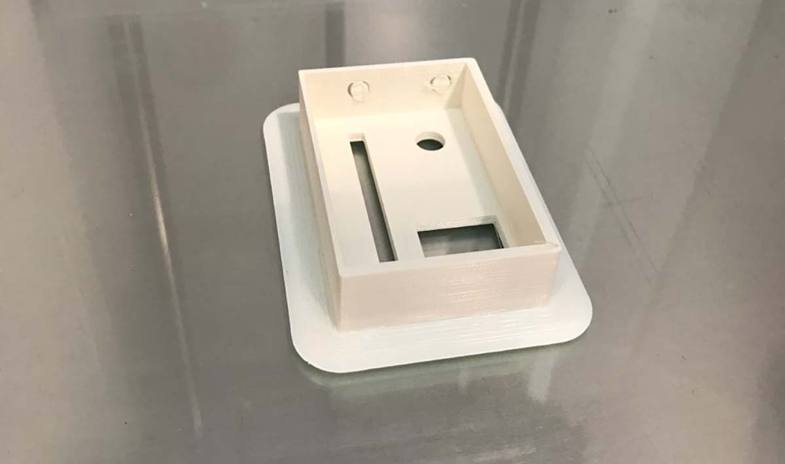

2. Opportunity
After understanding the issues with exisiting curtain automation we got some idea on how we should proceed. Most of the users were excited and started giving many ideas.
We took two of the user's story as a base for developing the prototype. First of all these two stories were the most common among users and secondly these are good base for us to start the prototype.
3. Prototype
One of the main problems we want to focus on is the Installation process. The installation of the hardware as well as the software should be easy to follow. To understand better I sketched the flow diagram for hardware and software installation. You will see the guided installation in the mobile app UI.
After lots of brainstroming and interacting with users we started sketching the design for both the physical product and software UI.
After the paper sketch, we moved forward for gathering hardware requirements. We needed to know what hardware components we will use in order to start 3D modeling for the device.
- ESP32
- 2 Stepper motors
- 2 Stepper Controllers
- Battery
- ON/OFF Switch
- Custom PCB
After knowing the exact hardware components, the next process was to design the 3D model for SmartCurtain device. To increase the prototype efficiency we used paper and cardboards. Then Oscar 3D modeled it and printed using 3D printer.
We had to iterate the design of the device due to installation problem with previous design.